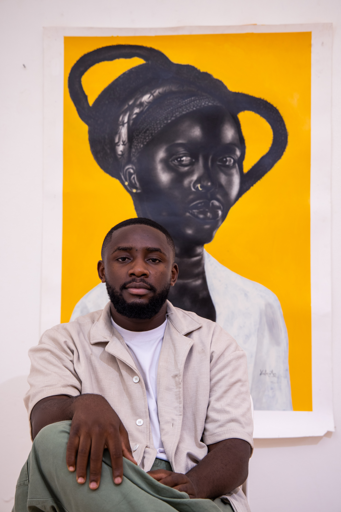

Biography
Kabeya Ilunga (born 2004 in Goma, DR Congo) is a self-taught Congolese contemporary painter based in Kampala, Uganda. Marked by conflict and exile, he returned to art in 2023 from the Nakivale refugee camp. This turning point gave birth to AFROCENTRIK, a series of fifteen large-scale portraits exploring Black pride, African traditions and memory.
His practice centres the African figure through charcoal, exploring Black skin, contrast, texture, deep shadow and psychological presence. He combines it with acrylic, oil, pastel, graphite and collage. Realistic faces meet stylised clothing, cultural symbols, textile motifs, hairstyles and halos in a personal visual language that is intimate, political and celebratory at once.
He has exhibited across East Africa and Europe at Makerere Art Gallery, Kiggundu Art Studio and Nafasi Art Space in Dar es Salaam, as well as in Berlin and Brussels. He represented Uganda at the international fair of young visual artists (FIJAP) in Abidjan, Côte d'Ivoire. He was a Young Leader for Arts and Health at the Kampala Summit in 2025.
In 2026 he is invited to exhibit at the Dakar Biennale, Dak'Art OFF, with Galerie Kaalûm.

Artistic statement
I define my practice as Afrocentric, rooted in the richness, beauty and sacredness of African cultures. My art places the African figure at the centre, not as an object of representation, but as a vehicle of power, grace and cultural depth.
Each face I draw is not a mere likeness: it is an act of restoration, an archive of pride, a mirror of spiritual endurance. Through charcoal, graphite, pastels, acrylic and oil, I highlight the dignity of scars, the wisdom of the gaze, the beauty of the skin, and the soul of silence.
My work aims not only to honour the past but to place African stories at the heart of contemporary art, where they belong.